Bear Jump1
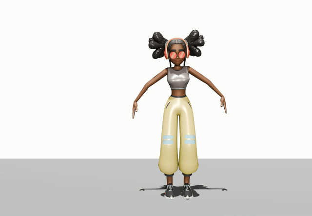
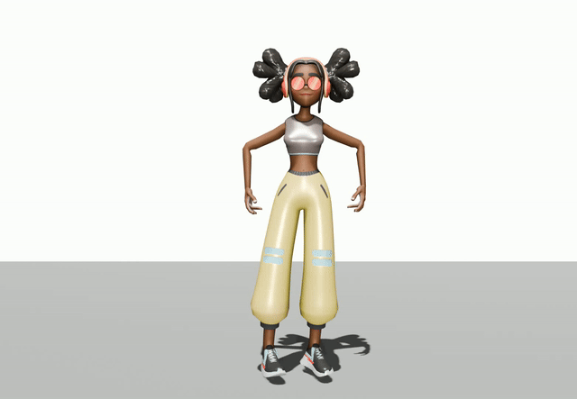
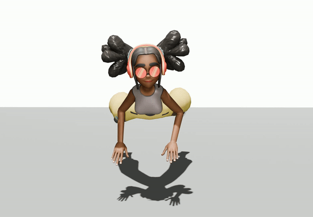
arXiv 2026
 Watch full video
Watch full video
AnyAct reenacts human motion from arbitrary character videos. It converts sparse 2D motion cues from animals, cartoons, objects, and stylized characters into plausible 3D human motions that preserve the source action semantics.
AnyAct uses sparse local 2D controls extracted from a source video to guide motion generation. The model is trained in two stages: a 3D stage learns sparse-motion guidance, and a 2D stage learns to control generation from projected sparse 2D observations.

Each group shows the reference video, our generated 3D motion, and available comparison results from the project material.



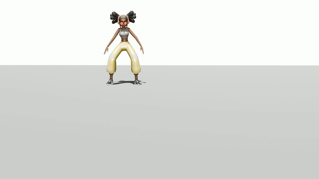

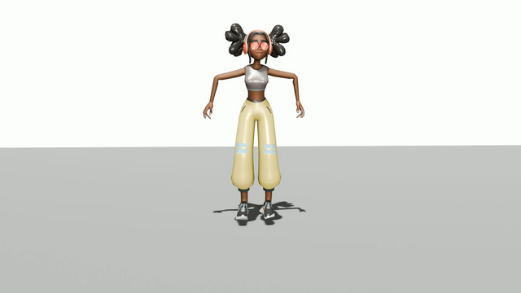
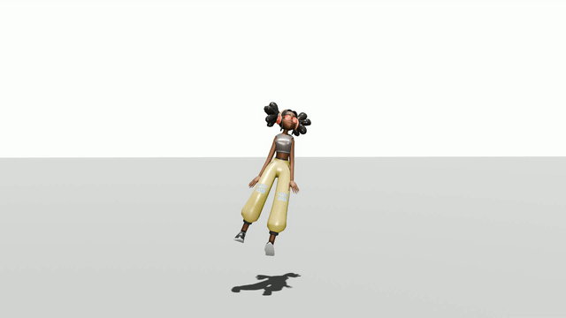
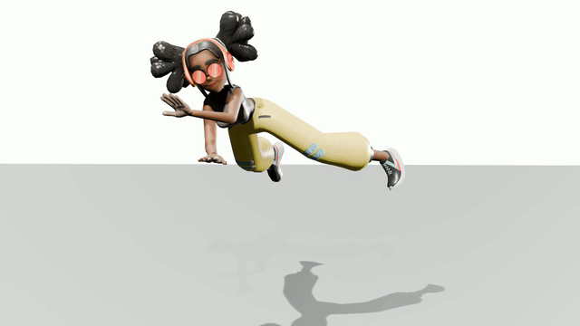
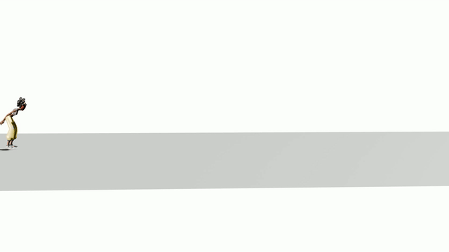


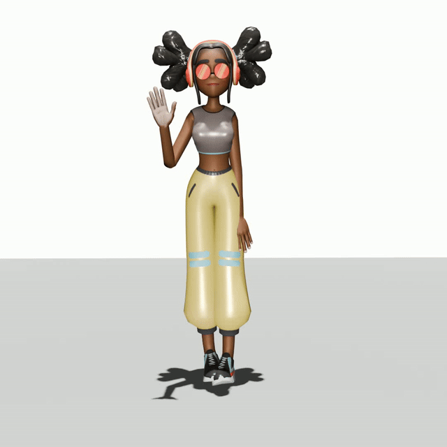

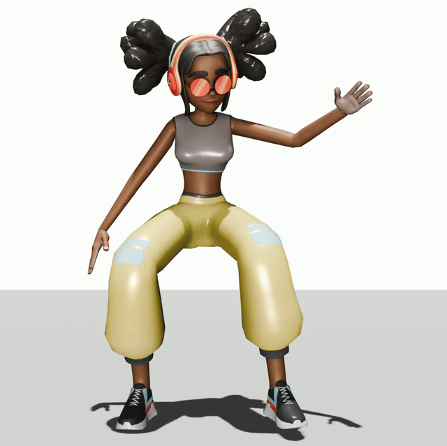


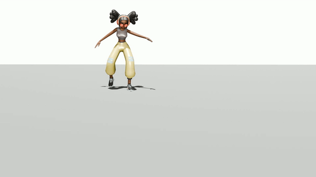
Additional examples include both the reference video GIF and the corresponding generated 3D motion GIF.


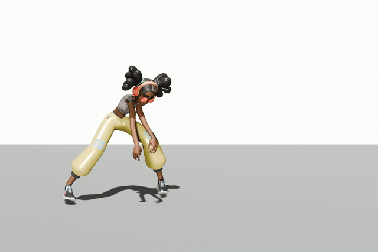
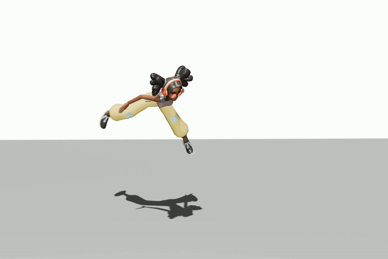


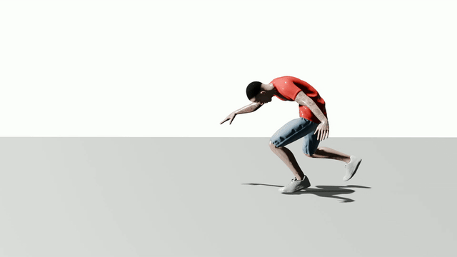
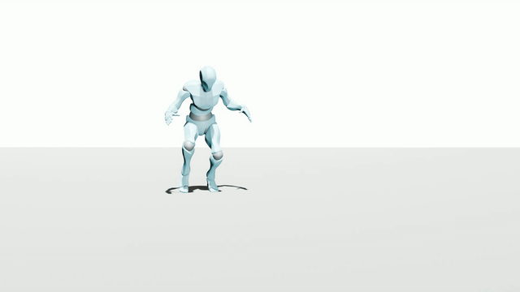


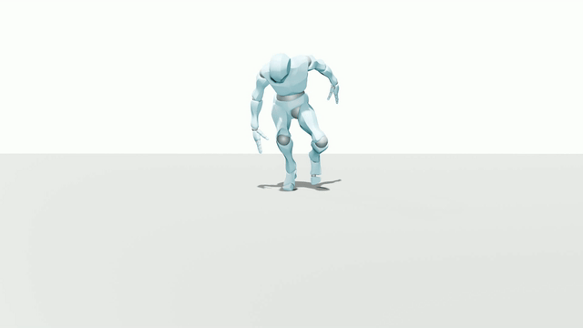
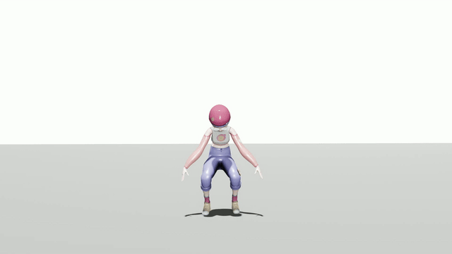
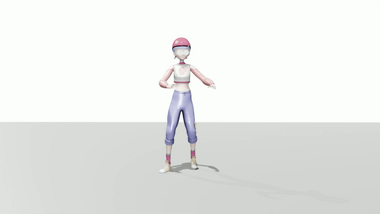


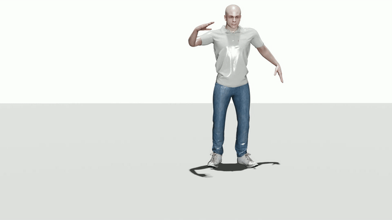
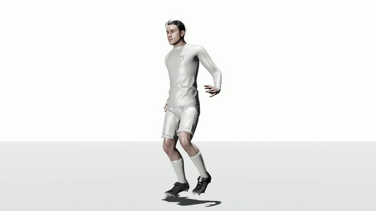

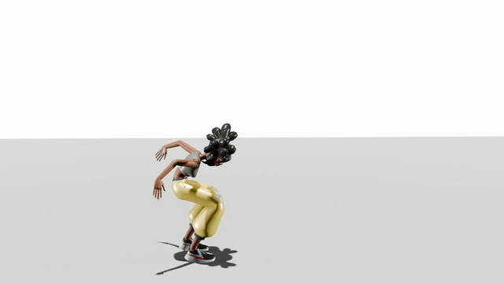
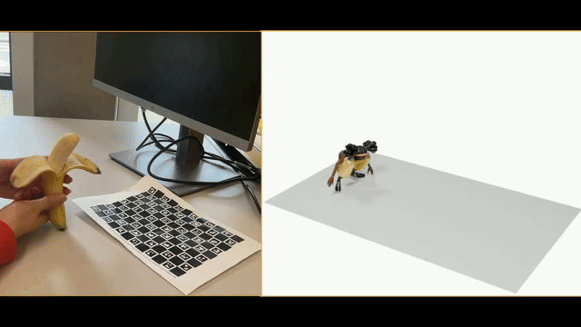
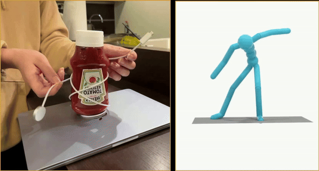
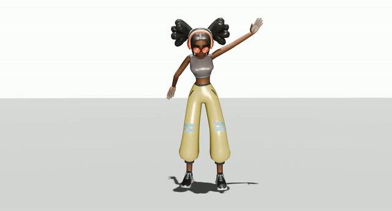
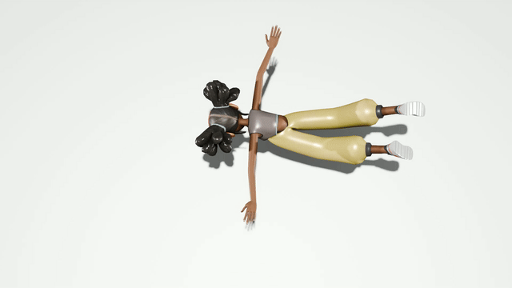


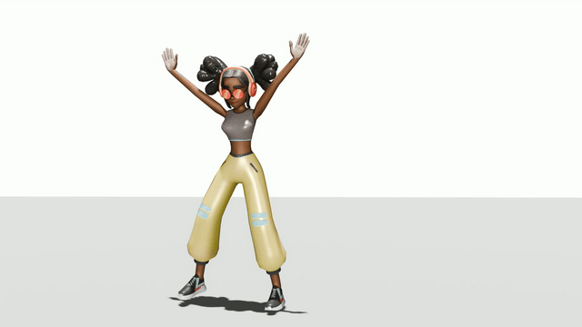
@article{chen2026anyact,
title={AnyAct: Towards Human Reenactment of Character Motion From Video},
author={Chen, Liuhan and Zhong, Lei and Wang, Jiewei and Shuai, Qin and Yuan, Li and Fan, Leidong and Li, Qing and Liu, Kanglin},
journal={arXiv preprint arXiv:2605.15497},
year={2026}
}